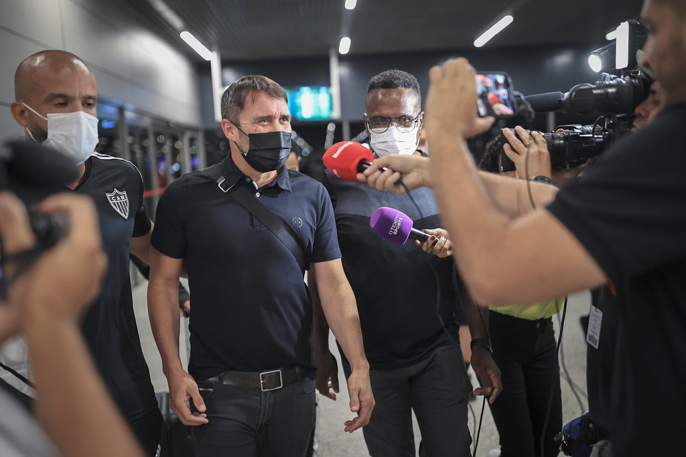

Coudet celebra classificação, mas admite que Atlético-MG não está na sua 'melhor versão'.
Após a vitória por 3 a 1 contra o Carabobo, o técnico do Atlético-MG comemorou o resultado e a classificação na Libertadores. Entretanto, o comandante argentino ressalto que ainda há muitas correções a fazer, para que a equipe chegue em sua "melhor versão".
- Tínhamos que passar, e passamos. Vamos seguir melhorando, e com certeza ainda não viram a melhor versão desse time. Vamos ganhando e corrigindo, o que é muito mais fácil assim - disse, em entrevista coletiva.
Vale lembrar que o Galo, sob o comando de Chacho Coudet está invicto na temporada. Até aqui, em nove jogos, são seis vitórias, três empates, a classificação à terceira fase da Libertadores e a melhor campanha da etapa classificatória do Campeonato Mineiro.
Na competição continental, garantido na terceira fase, agora o Atlético-MG espera uma definição de adversário entre Millionarios, da Colômbia e Universidad Catolica, do Equador. A primeira partida acontece na próxima semana, e o Galo jogará fora de casa.

Vale ressaltar que o Clube Atlético-MG é um dos times mais populares de toda Minas Gerais, empatado somente com o Cruzeiro Esporte Clube.